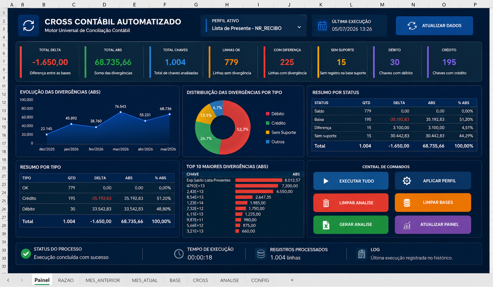
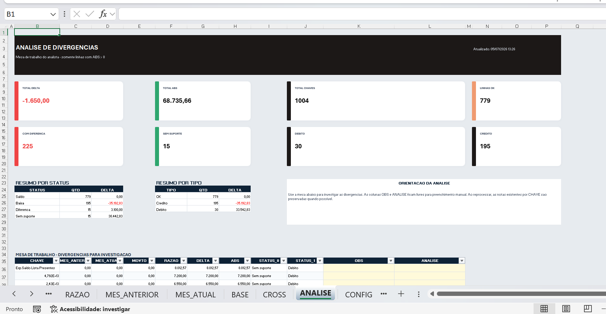

Cross Contábil Automatizado Universal
Ferramenta em Excel/VBA para automatizar a preparação de conciliações contábeis com motor parametrizado reutilizável.

Problema
O analista precisava importar bases, criar cruzamentos, aplicar fórmulas e localizar divergências manualmente antes de começar a análise contábil.
Objetivo
Automatizar a preparação do Cross, mantendo o julgamento técnico sob responsabilidade do analista.
Processo
Razão
Bases
CONFIG
Motor VBA
Análise
Solução
- Motor universal parametrizado.
- CONFIG para chave, marcador, valor e sinal.
- Geração de BASE, CROSS, PAINEL e ANÁLISE.
- Central de comandos para execução e limpeza.
Tecnologias
Resultados
- Redução do tempo de preparação.
- Padronização entre analistas.
- Reutilização para diferentes contas.
- Menor risco operacional.
Área de análise
Mesa de trabalho do analista com foco em divergências e campos para observação e parecer técnico.

Produto originado
Motor Universal de Conciliação Contábil.
Imagens e indicadores adaptados com dados fictícios.